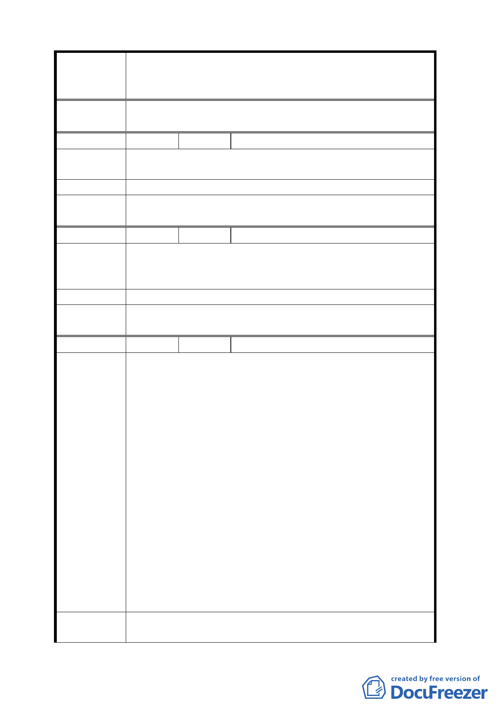

案名
編號
陳情理由
建議辦法
委員會
決議
編號
陳情理由
建議辦法
委員會
決議
編號
陳情理由
建議辦法
變更臺北市華光社區暨週邊地區住宅區、電信用地、郵
政用地及變電所用地土地為商業區、數位科技專用區及
金融服務專用區主要計畫案
念堂至永康商圈都市活動之委員建議，建請開發單位
納入後續再開發計畫擬訂考量。
3 陳情人 楊泰嘉
現住戶只有少數人能領到補助費，但多少人都沒有
補助費。
對於現住戶應由市政府建屋配住。
同編號 2 決議。
4 陳情人 陳綱維（錦泰里里長）
為何計畫內容未規劃住宅區？華光社區既已劃定為
都市更新範圍，若未規劃住宅區，將來如何安置違建
戶？
請都市發展局務必規劃住宅區。
同編號 2 決議。
5 陳情人 顧錦才
1.本社區大多為司法機關之宿舍，確屬簡陋破舊，尤以
日據時期所建者為甚。因此，馬英九先生先後於任法
務部長及臺北市長時，曾 2 度計畫改建宿舍，端因彼
時之司法院及其後之法務部主其事者消極不願配合
作，致未能實現。然此部分宿舍，乃前司法行政部部
長鄭彥棻先生為安定司法人員生活，鼓勵其廉潔從公
而興建，實乃仁心仁政之一大德政，殊深感懷。惟有
礙觀瞻者是老舊房舍，不是居住此宿舍之全體司法人
員，茲竟一律予以驅離，致部分無力購屋者亦乏力租
屋者頓時流離失所，焉是民主進步之所宜？
2.本社區周邊不僅已有中正紀念堂之大型園地，更有面
積廣大而美好之大安森林公園，現再於社區北側建公
園，不僅無此需要，且面積僅一千餘坪，除去應保存
之古蹟圍牆及應有之通路，狹長而若再與大安森林公
園相較，恐成畫蛇添足之建設。
3.若於計畫中之公園用地建築為供司法人員遷居之宿
舍，以其鄰接計畫中之住三用地，亦無不協調之虞。
1.建議於此計畫中之公園用地，建築小坪數（24 坪左右）
三房一廳之宿舍，以安置現居司法機關宿舍之現職及
-9-